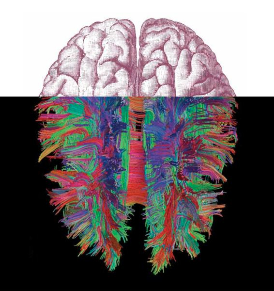

Beynin Durağan Halleri
İnsan beyni ile ilgili bir önceki mektubumda beyni anlaması neden bu kadar zordan bahsetmiştim prenses, hani milyonlarca nöron, trilyonlarca sinaps, bardağa uzanmak gibi en basit bir hareketinde bile beynin tamamında gözlenen hareketlilik ve bu aktiviteleri analiz etmekteki çaresizliğimiz. Bu yazıda bardağı bile bir kenara bırakalım dedim, yatağa uzanıp hiç birşey yapmadan durduğunda beyninde neler olup bitiyordur acaba? Yakın zamana kadar zihinbilimciler bu soruyla fazla ilgilenmediler, ne de olsa çok da önemli bir şey olmuyordur diye düşünüp. Beyin herhangi bir görevle meşgul olduğunda o görevle ilgili alanlar aktive olur, elde yapılacak bir şey olmadığında beyin de siesta moduna geçer. Tembellik parayla değil ya. Ama işin aslı öyle değilmiş prenses, zihinbilimciler kazara bu durağan aktivetinin (resting state activity) aslında anlamlı bir şeyler yapabileceğini uzun bir süre önce farkettidiyse de, Alice’in tavşan deliğinin içine düşmesi gibi ne kadar büyük ve bambaşka bir dünyanın içine düştüklerini anlamaları biraz zaman aldı. Beynin durağan hallerinde hiç de durağan olmayan, beyni anlayışımızı tepetaklak eden aktivitelerinden biraz bahsedeyim.
Beynin durağan hallerine olan ilginin iki kaynağı var. Birincisi; enerji giderleri. Yetişkin bir insanda beyin, vücut ağırlığının sadece %2’sini teşkil eder, buna rağmen vücudun enerji giderlerinin %20’sinden sorumludur, ağırlığına göre tahmin edilenden 10 kat fazla enerji harcıyor. Yani 8 silindirli Chevrolet timsali beyin abimiz. Beynin karbon emisyonlarını kıssak dünya kurtulur yeminlen. Daha da ilginci, bu enerji harcamasının sadece %5’i herhangi bir görev için ekstra harcanan enerji, geri kalan %95’i herhangi bir görevden bağımsız kendi iç aktivitelerine gidiyor. Bunun çoğu da nöronların birbirlerine sürekli gönderdikleri sinyaller. Bu kadar enerji görünürde hiçbir göreve yönelik olmasa da, belli bir fonksiyona hizmet ediyor olsa gerek, evrim boşa enerji harcıyan kullarını pek sevmez ne de olsa.
İkinci sebep; duyulardan gelen bilgiler. Camdan dışarıya baktığımızda çok yüksek çözünürlüklü bir manzara gördüğümüzü sanıyoruz ama aslında çevrenden gözündeki retinaya gelen bilgi ile senin gördüğün arasında dağlar kadar fark var. Çevrede sınırsız miktarda bilgi var malum, bunun 10^10 bits/saniye kadarlık bir kısmı retina tarafından kaydediliyor. Retinayı görsel kortekse bağlayan optik sinirlerin sınırlı sayıda aksonları olduğundan (akson: nöronları bir birine bağlayan kablolar prenses, yaklaşık olarak 1 milyon akson var) sadece yaklaşık 6*10^6 bits/saniye kadarı retinadan ayrılıp, sadece 10^4 bits/saniye kadarı birinci görsel alan olan V1’in dördüncü katmanına ulaşıyor (bu abinin altı katmanı var). Ki bu daha V1, bunun V2, V3, V4 ve bilimum diğer görsel alanlar ve bunların katmanları var. Kaba bir hesapla, bizim gördüğümüz görüntünün, yani bilinçli olarak farkında olduğumuz manzaranın bant genişliği 100 bits/saniye veya daha az olarak tahmin ediliyor. 10^10 bits/saniye ile başlayan macera 100 bits/saniye ile bitiyor, 10^8 bits/saniyelik bilgi arada yalan oluyor, bunun büyük çoğunluğu da daha yolun başında gidiyor. Görünen o ki beyin fakirleştirilmiş kısıtlı bilgiyle yerini yolunu bulmak zorunda. Elindeki bu sınırlı bilgiden çevreden gelen talepleri yorumlamak, cevap vermek ve hatta tahmin etmek beyne düşüyor. Başarısının sırrı, sürekli devam eden ve çok fazla enerjiye malolan içsel aktivetelerinde olabilir mi acaba?
Beynin durağan hallerinden kıllanmaya başlayan biliminsanları, bu durağan hallere baktıkça birbirine paralel olarak iki önemli keşif yaptılar. Bunlardan ilki default network, beynin belirli ve birbiriyle bağlantılı alanları herherhangi bir şey yapmadığın zamanlarda aktivitesini arttırıyor ve herhangi bir işle meşgul olduğu zaman aktivitesini azaltıyor. Yani beynin sanki bir standart modu var, normalde o modda duruyor, bir işe koyulduğu zaman o moddan çıkıp başka moda geçiyor, işi bitince o moda geri dönüyor, aç kapa artema misali ne güzel. İşi daha da ilginç kılan prenses, default network’e dahil olan beyin alanları, beynin oldukça önemli fonksiyonları ile ilişkilendirmiş alanları. Misal, hafıza ile ilişkilendirmiş medial temporal lobe, başkalarının zihninden geçenleri okuyabilme, sosyal durumlara uygun duygusal tepkiler verme ve karar alma gibi fonksiyonlarla ilişkilendirilmiş medial prefrontal kortex’in bir bölümü (Phineas Gage bu bölgesini kaybetmişti de ne hale gelmişti hatırlarsın prenses), ve farklı duyulardan gelen bilgilerin entegrasyonu ile ilişkilendirilmiş parietal kortex ve posterior cingulate kortex hep default network’e dahil alanlar. Bir de yapılan araştırmalarda default network’un doğuştan gelmediği, tam tersine uzun bir gelişim süreci sonucunda ilk olarak 7 ile 9 yaşları arasında bu alanlar arasındaki fonksiyonel ilişkilerin kabaca oturmaya başladığı, daha sonra okul yılları boyunca tam formunu aldığı ortaya çıktı. Hal böyle olunca farklı atmasyonasyon seviyelerinden teoriler gecikmedi. Kimisi default network’un otobiografik hafıza ile ilişkisi üzerinden benliğimizle, kimisi entegrasyon üzerinden yaratıcı düşünce üretme kapasitesiyle, kimisi içgözlem yeteneğimizle, kimisi de de simülasyon yeteneğimizle ilişkilendirdi. Dediğim gibi bunlar farklı atmasyon seviyelerinde teoriler, işin aslı kimse default network’un ne işe yaradığını bilmiyor.
Default Network'e dahil olan alanlar
İkinci paralel gelişme durağan hallerdeki fonksiyonel bağlantıların (resting state functional connectivity) keşfi. Beyin hiç birşey yapmadığı zamanlarda belirli alanlar ile bağlantı halinde olan yerler, beyin birşey yaptığı zamanlarda da aynı ilişkileri gösteriyor. Açalım biraz. Önce fMRI’ın nasıl çalıştığını biraz açıklamak gerekiyor prenses. fMRI içine girdiğin bir tünelde çevrende kocaman mıknatısların döndüğü, çok gürültülü bir görüntüleme teknolojisi. Bu kadarını biliyoruzdur. Bu mıknatıslar kandaki demir içerikli oksijen taşıyıcı hemoglobin adlı proteinin magnetik alanınındaki değişimleri ölçüyor. Olay basit aslında, nöronlar aktive olduklarında enerji harcıyorlar, harcanan enerjinin telefasi için bunlara glukoz (bildiğin şeker yav) takviyesi lazım. Tabii glukozu enerjiye dönüştürmek için oksijen de gerekiyor, hemoglobin burada devreye giriyor. Gerekli olan oksijeni sağlayan oksijen yüklü hemoglobin (oxyhemoglobin), oksijeni verdikten sonra oksijensiz hemoglobine (deoxyhemoglobin) dönüşüyor (lise biyoloji derslerinde uyuklamasaydım dediğini duyar gibiyim prenses). fMRI’in ölçtüğü de tam da bu değişim, oxyhemoglobin’in magnetik alanı var (diamagnetik), deoxyhemoglobin’in yok (paramagnetik). Yani kandaki oksijen seviyesine göre farklı bir magnetik resonans(MR) sinyali alıyorsun, buna BOLD sinyali (Blood oxygen-level dependence yanı kandaki oksijen seviyesine bağlı sinyal) deniyor.rolex vintage replica
Tabii bu oldukça gürültülü (noisy) bir sinyal. Bu sinyal gerçekten nöron aktivetesini ölçüyor mu kısmına ve ona bağlı komplikasyonlara hiç girmiyorum, ama direk nöronların aktivitesinden çok lokal alan potansiyeli (local field potential) denen belli bir alanda nöronların birbirleri ile bağlantı yaptığı sinapsların toplamından geçen elektirik akımıyla yakından ilişkili. Bu BOLD sinyalinden dergilerde ve başında gördüğümüz beynin belli bir alanının ampül gibi yandığı cicili bicili fotoğraflara giden yolda istatistik yardımımıza koşuyor. İşlem basit bir çıkarma işlemi aslen. BOLD sinyalinin farklı frekans bandları var (delta, 1–4 Hz; theta, 4–8 Hz; alpha, 8–12 Hz; beta, 12–24 Hz; ve gamma, >24 Hz). Kabaca anlatmak gerekirse, ilk işlem gamma dışındaki frekansları temizle ki şöyle temiz bir sinyalin olsun. Diğer bandlardaki olası anlamlı ilişkiler hoop çöpe. İkinci adım gamma sinyalini imaja çevir. Genelde zihinbilimciler, beynin hangi alanlarının bir algı veya davranışa karşılık geldiğini bulmak için bu gamma sinyalini aldığın yerlerdeki pixelleri, dalga boyuna göre farklı renkler vererek bir görüntüleme çalışması yaparlar. Bu alanları bulmak için ilişkili iki koşuldaki beyin aktivitesini karşılaştırırlar. Misal diyelim zihinbilimciler bir yazıyı içinden okumaya (kontrol koşulu) kıyasla sesli okurken (test koşulu) hangi beyin alanlarının önemli olduğunu görmek istiyorlar, o zaman bu iki koşuldaki görüntülerin arasındaki farklara bakıyorlar. Bu farkları görmek içinse, pasif-okuma koşulundaki görüntüdeki pixelleri sesli okuma koşulundaki pixellerden tek tek çıkartıyorlar. Geriye kalan ampül gibi yanan pixellerin sesli okuma için gerekli olan alanlar olduğu varsayılıyor. Tabi, bu işlemde bir sakatlık var: Beynin süregiden iç aktiviteleri iki resimde de ortak olduğu için ameliyat masasında kalıyor. Gamma dışındaki frekanslar gitti, ortak iç aktivete sinyalleri gitti, ama gazetelere manşet olucak hede hödö alanını bulduk yuppii.tic watches fake
Biz yuppilerle hoppilerle beyne “Çözdük seni olum nanik!” demelerle daha giderdik gitmesine, 1995 yılında aralarında Türk nöroradyolog Zerrin Yetkin’in de bulunduğu Wisconsin tıp fakültesinden bir ekip “Alooo, çok anlamlı datayı çöpe atıyoruz!” diye bağırmasaydı. Bu makale şu anda zihinbilimde foksiyonel bağlantısallık (functional connectivity) diye anılan yepyeni ve inanılmaz ilginç sonuçlara ulaşan bir araştırma alanı açtı ve eminim 80-100 yıl sonra değeri çok daha iyi anlaşılacak. Peki ne buldular? Düşük frekanslı, normalde çöpe atılan bandlara daha uzun zaman dilimlerinde bakıp, masaya parmağını vurduğunda yüksek frekanslı aktivite gözlenen motor alanların, durağan, hiç birşey yapmadığın hallerde düşük frekansda birbirleriyle ilişkide olan nöronlarla çok benzer olduğunu buldular.replica watches omega 007
a) Masaya parmaklarınla vurma hareketinde beyinde aktive olan alanlar b) Aynı bölgelerde durağan halde düşük frekanslı salınımlarda birbiriyle ilişkide olan nöronlar. Kırmızı; nöronlar arasında pozitif korelasyon, sarı; negatif korelasyon olduğunu gösteriyor. (Biswal et. al. 1995)
Yani bu alanlar sen bir şey yapsan da yapmasan da birbirleri ile zaten sürekli ilişki içinde, birşey yaptığında gözlenen sadece aktivitenin frekansında bir artış. Bu da durağan haldeki ilişkinin fonksiyonel olarak anlamlı olduğu gösteriyor. Yani hiç birşey yapmadığın zamanlardaki aktivite, ilerde bir gün parmağını oynatman da dahil bir sürü motor fonksiyonla alakalı, çünkü parmağını oynattığında gördüğümüz aktiviteye çok benzer. Başka bir ekip anestezi ile uyutulmuş bir maymunun okülomotor (gözlerinin hareketi ile ilgili) alanlarına bakıp bunu gözlerini solda bir hedefe yönlendirme hareketi sırasındaki aktivite, ve bir de bu alanlardaki anatomik bağlantılarla karşılaştırdılar, benzerlik inanılmaz:
a) Anestezi altındaki maymunda spontene düşük salınımlı aktivite korelasyonları b) Uyanık maymunda hedefe yönelik göz hareketi sırasında aktive olan nöronlar c) Anatomik bağlantılar, radyoaktif iz sürücüler enjekte ederek nöronların projeksiyon yaptığı alanlar saptanmış (Vincent et. al. 2007)
Ya da kedilerin 18. görsel alanında oryantasyona duyarlı nöronlarında yapılan başka bir çalışma:
Görsel korteksde spontene ve oryantasyona bağlı tepkiler. Beyaz alanlar en yüksek genlikte tepki veren nöronlar, siyah alanlar en düşük genlikte tepki verenler a) Farklı açılarda çizgi görüntülerine verilen nöral tepkiler, 165 tane karenin ortalaması b) aynı bölgede hiçbir uyaran olmadan spontane aktiviteyi gösteren bir kare c) dik pozisyonda ki bir çizgi görüntüsüne verilen nöral tepkiden bir kare (Kenet et. al. 2003)
Bu durağan hallerde olan aktivetilerle, belli bir iş yaptığında ortaya çıkan aktivitelerin paralelliği daha sonra başka ekipler tarafından çok başka alanlarda ve koşullarda da gösterildi. Ortaya çıkan tablo oldukça ilginç. Birincisi; bu spontene aktiviteler arasındaki ilişkiler bilincin seviyelerini aşıyor çünkü insanlarda, maymunlarda, farelerde anestezi altında ve aynı zamanda insanlarda uykunun ilk aşamalarında saptandı. Yani durağan hallerde hayallere dalma, düşüncelerin beyninde akıp gitmesinden falan bağımsız bir olay. İkincisi; bu fonksiyonel bağlantılar beyindeki anatomik bağlantılarla uyumlu olsa da, onlarla sınırlı değil. Anatomik olarak direk bağlı olmayan bölgeler fonksiyonel olarak bağlı görünüyor. Üçüncüsü; bölgeler arasındaki bağlantıların uyumluluk gücü yaş ve hastalıkla değişim gösteriyor. Aynı zamanda gelişimsel olarak da değişiyor. Son olarak; BOLD sinyalindeki spontene salınımlar hem uyandırılmış karşılıklarındaki hem de ilişkilendirilmiş davranışlardaki değişimlere ciddi ölçüde etki ediyor.
Durağan hallerdeki fonksiyonel bağlantıların keşfi zihinbilimcilere yepyeni bir dünyanın kapılarını açtı. Artık herhangi bir davranış ile test etmeye gerek olmadan, sadece durağan halde data alıp bunların analizinden nöronlar arasındaki fonksiyonel ilişkileri elde etmek mümkün. Misal, birçok üniversite laboratuarlarının ortaklaşa yürüttüğü insan beyninindeki bağlantıların tam haritasını çıkarmayı hedefleyen devasa Human Connectome Project bu yöntemden oldukça faydalanıyor. Lakin henüz ne bu içsel aktivelerin nasıl çalıştığına, ne de bunların hangi davranışlara nasıl neden olduğuna dair bir fikrimiz yok. Hatta, tam tersine bir çok fonksiyonla ilişkilendirdiğimiz alanlar aslında o fonksiyonlara spesifik bile olmayabilirler. Bizim şu ana kadar keşfettiğimiz ampül gibi yanan alanlar, buzdağının yanlızca görünen küçük bir kısmı imiş. Ama en azından beyindeki tüm fonksiyonel bağlantıları anladığımızda büyük resmi ilk defa görmüş olucaz, ki bu da belirli alanlara spesifik fonksiyonlar atfetmekten daha işe yarar olucak. Bağlantılar yine de resmin sadece kaba hatları, asıl bu bağlantılardan insan davranışı nasıl ortaya çıkıyor sorusu sanırım uzun bir süre daha zihinbilimcileri meşgul etmeye devam edicek.


{kind=link}
{kind=link}
{kind=link}
{kind=link}
{kind=link}
Ustad,
Emegine ve yaziya sapka cikariyorum. Okurken mutluluktan gozlerim yasardi. Insan gozundeki bir layer noron da ortalama kac noron vardir sorusu ise kafami mesgul etmekte (billions ?)
Saygilar,
Ali Can
Eyvallah Ali. Insan gozundeki bir layer noron derken retinadaki rod ve cone adli reseptolerden bahsediyorsan, 7 milyon cone ve 75 ila 150 civarinda da rod var, yani kaba bir hesapla gozde 150 milyon civarinda reseptor var. Bu reseptorleri beyindeki gorsel alana baglayan aksonlarin sayisi kisitli oldugunda (1 milyon akson), ilk bilgi kirpilmasi gozun icince gerceklesiyor
Yazı iyiymiş, eline sağlık. Default mode network olayı beni de fazlasıyla heyecanlandırıyor bu ara, “zihinbilim” (hımm yazıdaki çeviriyi beğendim valla, ben de böyle kullanabilirim artık) bence bize kafanızı iyice açın, beni ancak öyle algılayabilirsiniz diyor. Şimdiye kadar bu konuya ilgi gösterilmemesi, “resting state” in ciddiye alınmaması garip değil mi? Bence garip. Neyse burdan zihni anlamak için çok ekmek çıkacak gibi görünüyor, güzel olan bu.
Konuyla ilgilenenlere:
http://www.kurzweilai.net/insights-on-spontaneous-brain-activity-from-neuroimaging